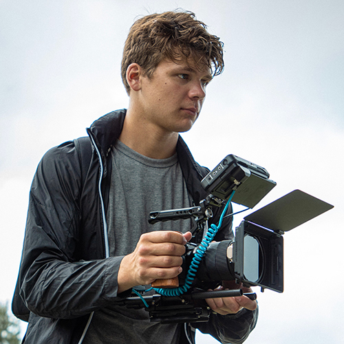

Jerry Marshall
Lead Editor, Shooter, VFX & Developer
Jerry Marshall is a professional videographer who has been shooting, editing, and producing videos for over a decade. Since becoming a professional videographer in 2020, he has produced content for dozens of companies, organizations, and events across Southern Ontario, including Ontario Tech University, Market Logics, Duntroon Highlands, and South Georgian Bay Tourism. He has also worked closely with H Visual Media to produce videos for Honda, Blue Mountain Resort, One World Music Festival, the Great Northern Exhibition, and more.